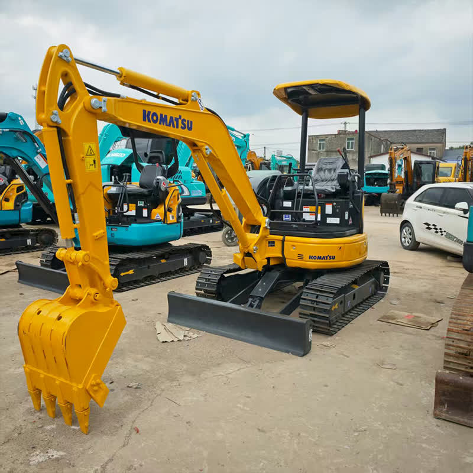

Refurbished Komatsu PC30 Excavator
The Komatsu PC30 is a compact excavator that delivers impressive performance despite its smaller size. Perfect for a range of light to medium construction, landscaping, and utility tasks, this machine combines powerful hydraulics with exceptional maneuverability. Choosing a refurbished Komatsu PC30 offers excellent value, as it allows businesses to access a reliable, high-performance machine at a fraction of the cost of a new model.
Honestly, it's almost impossible to buy a brand new excavator from China. They either don't exist or are made in China. If a Chinese seller tells you their Caterpillar/Komatsu/Volvo/Kobelco/Hitachi is brand new, they're lying. Therefore, a refurbished excavator is your best bet.

Here are the detailed specifications for a refurbished Komatsu PC30MR-2 or PC30MR-3 mini excavator:
Operating Weight and Dimensions
- Operating Weight: 3,200–3,400 kg
- Overall Length: ~4.7–4.9 meters
- Overall Width: ~1.55–1.60 meters
- Overall Height: ~2.45–2.5 meters
- Tail Swing Radius: ~1.3–1.4 meters (minimal radius design)
- Ground Clearance: ~290–310 mm
- Track Width: 300 mm standard
Engine and Powertrain
- Engine Model: Komatsu 3D88E-6 or SAA3D88E-6 (Tier 2/Tier 3 compliant)
- Rated Power Output: ~21.5–22.5 kW (29–30 hp) @ 2,200 rpm
- Maximum Torque: ~110–120 Nm
- Fuel Tank Capacity: ~45–50 liters
- Travel Speed: 2.8–4.5 km/h
- Swing Speed: ~9.5 rpm
- Gradeability: Up to 30°
Hydraulic System
- Main Pump Type: Variable displacement axial piston pump
- Flow Rate: ~2 × 60–70 L/min
- System Pressure: Up to 24.5 MPa
- Hydraulic Oil Capacity: ~60–70 liters
- Boom Cylinder Bore: ~85 mm
- Arm Cylinder Bore: ~70 mm
- Bucket Cylinder Bore: ~60 mm
Performance Metrics
- Bucket Capacity: 0.09–0.11 m³ (SAE heaped)
- Max Digging Depth: ~2.8–3.0 meters
- Max Reach (Horizontal): ~5.0–5.2 meters
- Max Dump Height: ~3.4–3.6 meters
- Bucket Digging Force: ~26–28 kN
- Arm Digging Force: ~16–18 kN
Cab and Operator Features
- Cab Type: ROPS/FOPS certified (canopy or enclosed)
- Display: Basic LCD or analog gauges
- Controls: Pilot joystick controls with auxiliary hydraulic circuit
- Comfort: Adjustable seat, optional air-conditioning
- Visibility: Wide glass area, LED work lights
Smart Features and Efficiency
- Fuel Efficiency: Mechanical fuel injection with auto idle
- Emissions Control: Tier 2 or Tier 3 compliant (no DPF/SCR)
- Telematics: KOMTRAX optional in later PC30MR-3 units
- Transportability: Easily trailerable under 3.5-ton class
Attachments Compatibility
- Standard Bucket: 0.09–0.11 m³
- Optional Tools: Hydraulic breaker, auger, compactor, ripper
- Quick Coupler: Manual or hydraulic options available
Refurbishment Scope
Refurbished PC30 units typically include:
- Engine Overhaul: Cylinder head, injectors, turbo, seals
- Hydraulic Restoration: Pump recalibration, valve block testing, hose replacement
- Electrical Diagnostics: Monitor, sensors, wiring harness
- Cab Reconditioning: Seat, joysticks, HVAC, repainting
- Structural Repairs: Boom/bucket welding, bushing replacement, undercarriage rebuild
Overview of the Komatsu PC30 Excavator
The Komatsu PC30 is part of Komatsu’s line of compact excavators, designed for versatility, fuel efficiency, and reliability. Whether working on residential projects, urban construction, or utility installations, this excavator proves itself capable of handling tasks in tight spaces, making it a preferred choice for operators who need agility combined with strength.
Key Specifications of the Komatsu PC30
-
Operating Weight: Approximately 3,000–3,300 kg (6,600–7,300 lbs)
-
Engine Power: Around 20–25 kW (27–34 hp)
-
Max Digging Depth: Up to 3.1 meters (10.2 feet)
-
Max Reach: Around 5.5 meters (18 feet)
-
Bucket Capacity: Typically 0.08 to 0.1 cubic meters (2.8–3.5 cubic feet)
-
Travel Speed: Up to 4.5 km/h (2.8 mph)
-
Fuel Tank Capacity: Approximately 30–40 liters (7.9–10.6 gallons)
The PC30 is specifically designed to combine the performance of larger excavators with the compact dimensions needed to work in confined spaces. Its size, weight, and power ratio make it an excellent choice for operators who need flexibility but don’t require the bulk of a full-sized machine.
Performance and Engine Efficiency
The Komatsu PC30 is equipped with an efficient and powerful engine that provides reliable performance across a variety of tasks. Its fuel-efficient design helps businesses save on operational costs while delivering optimal results.
-
Engine Power: The Komatsu PC30 features a Komatsu S4D95 engine, which produces 20–25 kW (27–34 hp) of power. This engine is capable of delivering excellent lifting and digging performance while maintaining fuel efficiency.
-
Fuel Efficiency: Designed to operate efficiently on minimal fuel, the PC30 is ideal for long-term use in urban and residential projects. The low fuel consumption significantly reduces operational expenses, making it an attractive option for businesses seeking to control costs.
-
Emissions Compliance: With increasing global environmental regulations, the PC30 adheres to modern emissions standards, reducing its environmental footprint while still delivering on performance.
Hydraulic System: Power and Precision
The PC30's hydraulic system plays a critical role in its performance. Designed to provide smooth, powerful, and efficient digging, lifting, and material handling, the system ensures that the machine works with precision in a variety of conditions.
-
Hydraulic Power: The PC30 is equipped with a hydraulic system that offers high pressure and fluid flow rates, enabling it to perform tasks ranging from simple trenching to material handling and lifting operations.
-
Load-Sensing Hydraulics: The machine is fitted with load-sensing hydraulic controls that adjust the flow rate depending on the task. This system enhances fuel efficiency and ensures that the hydraulic power is used only when needed, extending the machine's longevity and reducing wear on critical components.
-
Precise Control: The PC30's hydraulic system provides operators with precise control, allowing for smooth and predictable movement when digging or lifting. This is particularly valuable in tight spaces where accuracy is essential.
Compact Design and Maneuverability
One of the standout features of the Komatsu PC30 is its compact design, making it well-suited for tight workspaces where larger machines would be impractical. Its small size enables it to operate effectively in urban settings, residential areas, or areas with restricted access.
-
Compact Dimensions: The PC30 measures around 2.2 meters (7.2 feet) in width, making it highly maneuverable. It can work in narrow spaces, making it ideal for construction sites with limited access, such as city streets or between buildings.
-
Low Tail Swing: The low tail swing design ensures that the machine’s rear does not extend excessively beyond the undercarriage, allowing it to rotate in tight quarters without causing obstruction. This feature is especially beneficial for operators working in confined urban environments.
-
Enhanced Stability: Despite its compact size, the PC30 maintains excellent stability while operating on uneven ground. Its wide tracks and balanced weight distribution ensure that the machine can perform safely and effectively across various terrains.
Operator Comfort and Safety Features
Komatsu places significant emphasis on operator comfort and safety, providing a cabin that is both ergonomic and safe. This design philosophy helps improve productivity by minimizing operator fatigue and ensuring safety during operation.
-
Ergonomic Cabin: The PC30 features a well-designed cabin with adjustable seating, ample legroom, and easy-to-reach controls. The clear visibility from the operator’s seat allows for improved safety when operating the machine, especially in tight spaces or near obstacles.
-
Safety Features: The PC30 is equipped with essential safety features such as rollover protective structures (ROPS) and falling object protective structures (FOPS), which provide additional protection in case of an accident. These safety measures ensure that operators remain protected, even in challenging conditions.
-
Reduced Vibration: The cabin is designed to minimize vibrations, reducing operator fatigue and improving comfort during extended work hours. This results in more productive work sessions and less downtime.
Benefits of Choosing a Refurbished Komatsu PC30
Opting for a refurbished Komatsu PC30 brings several advantages, especially when it comes to cost savings without sacrificing quality and performance. Refurbished models are thoroughly inspected and restored to like-new condition, offering businesses a reliable and cost-effective solution.
-
Cost Savings: A refurbished PC30 can cost 30–40% less than a new machine, which makes it an excellent choice for businesses that want to control their expenses while still investing in a high-performance piece of equipment.
-
Expert Refurbishment: Refurbished PC30 models undergo a comprehensive inspection and repair process, including replacing or servicing essential components like the engine, hydraulic system, and undercarriage. These machines are restored to meet Komatsu’s stringent standards.
-
Long-Term Durability: With proper maintenance, a refurbished PC30 can provide reliable performance for many years. Refurbished machines often come with warranties, offering peace of mind and reducing the risk of unexpected repairs.
-
Environmental Impact: Purchasing a refurbished machine contributes to sustainability by reducing the demand for new manufacturing, thus lowering the environmental impact of production.
Maintenance Tips for the Komatsu PC30
To get the most out of your refurbished Komatsu PC30, regular maintenance is essential. Proper care ensures that the excavator operates efficiently and remains reliable for years to come.
-
Hydraulic System Maintenance: Check hydraulic fluid levels regularly and inspect hoses for leaks or signs of wear. Ensure the system is clean and free from contaminants to maintain smooth operation.
-
Engine Care: Regularly change the engine oil, check the coolant levels, and clean the air filter. Perform these tasks at recommended intervals to keep the engine running smoothly.
-
Undercarriage Inspection: Regularly inspect the tracks, rollers, and sprockets for wear. Clean the undercarriage to prevent the buildup of dirt or debris that could affect the machine’s stability and performance.
-
General Inspections: Perform routine checks of all components, including the hydraulic system, fuel system, and electrical components. Early detection of issues can prevent costly repairs and ensure long-term performance.
Conclusion
The Komatsu PC30 is a reliable, compact excavator that excels in small to medium-scale construction, landscaping, and utility projects. Its efficient hydraulic system, powerful engine, and compact design make it a versatile machine that can handle a variety of tasks in tight spaces. Opting for a refurbished Komatsu PC30 allows businesses to access this high-performance machine at a significantly reduced price, making it an attractive option for those looking for a cost-effective solution without compromising on quality. With regular maintenance, a refurbished PC30 can serve businesses for years, delivering reliable service and a solid return on investment.
Our Commitment
- 2 years / 4000 hours warranty.
- EPA certified.
- No sweatshop labor.
Contacts

- [email protected]
- Youtube Instagram Facebook
- Navigation: G206 (Sishu Bridge) in Changfeng County, Hefei City, Anhui Province, 200 meters north to the east